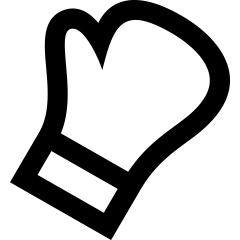

Numerr telefonu:
Numerr telefonu:
 Email:
Email:
 Data urodzenia:
*****
Data urodzenia:
*****
 Miejsce zamieszkania:
*****
Miejsce zamieszkania:
*****
O mnie
Jestem Szymon, mam 24 lata i po latach pracy w sprzedaży, zdecydowałem, że czas na przebranżowienie się i padło na zostanie Frontend Developerem. Mam nadzieję, że pójdzie mi to gładko i szyko uda mi się znaleźć pracę w nowym i jakże wymagającym zawodzie
Doświadczenie zawodowe
Języki
- Język Polski - Ojczysty
- Język Angielski - B2
Wykształcenie
- 10.2020 - 07.2022: Uniwersytet SWPS - Dziennikarstwo
- 10.2017 - 06.2020: Uniwersytet UKW - Dziennikarstwo
Zainteresowania
-
Koszykówka
W koszykówkę grałem 8 lat, a start mojej przygody z tą dyscypliną był totalnym przypadkiem. Granie w małej hali w szkole, zmieniło się w grę dla klubów, w tym drugoligowych zespołów seniorskich
-
Programowanie
Przy komputerze spędzałem bardzo dużo czasu za czasów dzieciństwa, ale nigdy nie interesowało mnie jak to wszystko tak naprawdę powstaje. Od niedawna jest to moja pasja, którą staram się rozwijać.
-

Sztuki walki
Muay Thai bo o tym dokładniej mowa jest moją najnowszą sportową pasją. Zaraził mnie do niej mój brat cioteczny, który jest brązowym medalistą mistrzostw świata. Sam mam stoczone dwa amatorskie pojedynki.
-
Gotowanie
Gotowaniem zacząłem się interesować w momencie, gdy wyprowadziłem się od moich rodziców z domu i trzeba było zająć się gotowaniem samemu.